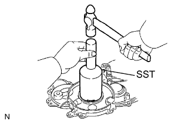
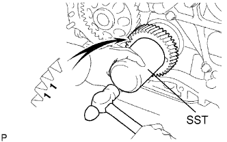
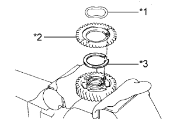
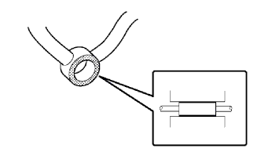

БЛОК ДВИГАТЕЛЯ (для моделей с DPF) > ПОВТОРНАЯ СБОРКА |
| 1. УСТАНОВИТЕ ЗАДНИЙ САЛЬНИК КОЛЕНЧАТОГО ВАЛА |
При помощи SST и молотка запрессуйте новый сальник так, чтобы его поверхность была заподлицо с краем стопора заднего сальника.
Нанесите универсальную консистентную смазку на кромку сальника.
| 2. УСТАНОВИТЕ САЛЬНИК НАГНЕТАЮЩЕГО НАСОСА |
При помощи SST и молотка запрессуйте новый сальник так, чтобы его поверхность была заподлицо с краем крышки газораспределительного механизма.
Нанесите универсальную консистентную смазку на кромку сальника.
| 3. УСТАНОВИТЕ ПЕРЕДНИЙ САЛЬНИК КОЛЕНЧАТОГО ВАЛА |
|  |
При помощи SST и молотка запрессуйте новый сальник так, чтобы его поверхность была заподлицо с краем крышки газораспределительного механизма.
Нанесите универсальную консистентную смазку на кромку сальника.
| 4. УСТАНОВИТЕ СТОПОР ЗАДНЕГО САЛЬНИКА КОЛЕНЧАТОГО ВАЛА |
Удалите старый герметик (FIPG) с масляного поддона и блока цилиндров.
Нанесите герметик Seal Packing в местах, показанных на рисунке.
| *1 | Герметик |
Установите держатель заднего сальника коленчатого вала и закрепите его 5 болтами. Попеременно затяните 5 болтов в несколько приемов.
| 5. УСТАНОВИТЕ ВЕДОМУЮ ШЕСТЕРНЮ УРАВНОВЕШИВАЮЩЕГО ВАЛА № 2 |
Закрепите уравновешивающий вал в тисках между алюминиевыми пластинами.
Совместите штифт уравновешивающего вала с отверстием для штифта. Затем установите упорную шайбу уравновешивающего вала и ведомую шестерню уравновешивающего вала.
Заверните болт.
| 6. УСТАНОВИТЕ УРАВНОВЕШИВАЮЩИЙ ВАЛ № 2 В СБОРЕ |
Закрепите уравновешивающий вал 2 болтами.
| 7. УСТАНОВИТЕ ВЕДОМУЮ ШЕСТЕРНЮ УРАВНОВЕШИВАЮЩЕГО ВАЛА № 1 |
Закрепите уравновешивающий вал в тисках между алюминиевыми пластинами.
Совместите штифт уравновешивающего вала с отверстием для штифта. Затем установите упорную шайбу уравновешивающего вала и ведомую шестерню уравновешивающего вала.
Заверните болт.
| 8. УСТАНОВИТЕ УРАВНОВЕШИВАЮЩИЙ ВАЛ № 1 В СБОРЕ |
Закрепите уравновешивающий вал 2 болтами.
| 9. УСТАНОВИТЕ КАРТЕР ГАЗОРАСПРЕДЕЛИТЕЛЬНОГО МЕХАНИЗМА В СБОРЕ |
 |
Установите 2 новых кольцевых уплотнения на блок цилиндров.
| *1 | Новое кольцевое уплотнение |
 |
Установите новую прокладку в канавку картера газораспределительного механизма.
| *1 | Новая прокладка |
Удалите все остатки старого герметика (FIPG).
 |
Нанесите герметик на картер газораспределительного механизма, как показано на рисунке.
| *1 | Герметик |
 |
Совместите метки "2" ведомой шестерни уравновешивающего вала № 1 и ведущей шестерни масляного насоса.
 | Пустотелый соединительный болт-штуцер |
 | Болт A |
| Болт B |
Закрепите картер газораспределительного механизма с помощью пустотелого соединительного болта-штуцера и 8 болтов.
| 10. УСТАНОВИТЕ ПОДДОН КАРТЕРА В СБОРЕ |
Удалите все остатки старого герметика (FIPG). Следите, чтобы масло не попало на сопряженные поверхности блока цилиндров, стопора заднего сальника коленчатого вала и масляного поддона.
Установите новую прокладку на блок цилиндров.
 |
Нанесите герметик в виде сплошного валика, как показано на рисунке.
| *1 | Герметик |
Установите поддон картера и закрепите его 22 болтами и 2 гайками.
| 11. УСТАНОВИТЕ МАСЛОПРИЕМНИК С СЕТЧАТЫМ ФИЛЬТРОМ В СБОРЕ |
Установите новую прокладку и закрепите сетчатый фильтр 2 гайками.
| 12. УСТАНОВИТЕ ПОДДОН КАРТЕРА № 2 В СБОРЕ |
Удалите все остатки старого герметика (FIPG).
Нанесите герметик на масляный поддон № 2, как показано на рисунке.
| *1 | Герметик |
Установите масляной поддон № 2 и закрепите его 13 болтами и 2 гайками.
| 13. УСТАНОВИТЕ ШЕСТЕРНЮ НАСОСА ВЫСОКОГО ДАВЛЕНИЯ |
Закрепите новое кольцевое уплотнение и нагнетающий топливный насос 2 гайками.
Временно закрепите шестерню насоса высокого давления гайкой.
 |
Совместите метки "3" ведомой шестерни уравновешивающего вала № 2 и шестерни насоса высокого давления.
 |
Установите новое кольцевое уплотнение на шестерню насоса высокого давления.
| *1 | Новое кольцевое уплотнение |
 |
Заверните установочную гайку шестерни насоса высокого давления.
Затяните установочную гайку с помощью SST.
| 14. УСТАНОВИТЕ ВЕДУЩЕЕ ЗУБЧАТОЕ КОЛЕСО КОЛЕНЧАТОГО ВАЛА |
|  |
Установите ведущее зубчатое колесо коленчатого вала таким образом, чтобы установочная метка 1 была направлена вперед.
Совместите шпоночную канавку ведущего зубчатого колеса коленчатого вала с установочной шпонкой на коленчатом валу.
С помощью SST и молотка вбейте ведущее зубчатое колесо, чтобы установить его.
| 15. УСТАНОВИТЕ ВАЛ ПРОМЕЖУТОЧНОЙ ШЕСТЕРНИ № 1 |
 |
Нанесите слой моторного масла на вал промежуточной шестерни № 1.
| *1 | Моторное масло |
 |
Установите вал шестерни, как показано на рисунке.
| *1 | Смазочное отверстие |
| 16. УСТАНОВИТЕ ВСПОМОГАТЕЛЬНУЮ ПРОМЕЖУТОЧНУЮ ШЕСТЕРНЮ № 2 |
 |
Зажмите промежуточную шестерню № 1 в тисках.
| *1 | Метка выреза |
Установите пружину промежуточной шестерни.
| *1 | Пружинная шайба |
| *2 | Вспомогательная промежуточная шестерня № 2 |
| *3 | Пружина промежуточной шестерни |
Установите вспомогательную промежуточную шестерню № 2.
Установите пружинную шайбу.
 |
С помощью съемника стопорных колец установите пружинное стопорное кольцо вала.
С помощью SST совместите отверстия в промежуточной шестерне № 1 и вспомогательной промежуточной шестерне № 2, вращая для этого вспомогательную промежуточную шестерню № 2 по часовой стрелке, и вверните технологический болт.
| *1 | Технологический болт |
Извлеките промежуточную шестерню № 1 из тисков и переверните ее.
| 17. УСТАНОВИТЕ ВСПОМОГАТЕЛЬНУЮ ПРОМЕЖУТОЧНУЮ ШЕСТЕРНЮ № 1 |
Зажмите промежуточную шестерню № 1 и вспомогательную промежуточную шестерню № 2 в тисках.
| *a | Вверх |
Выверните технологический болт.
| *1 | Технологический болт |
|  |
Установите пружину промежуточной шестерни.
| *1 | Пружинная шайба |
| *2 | Вспомогательная промежуточная шестерня № 1 |
| *3 | Пружина промежуточной шестерни |
Установите вспомогательную промежуточную шестерню № 1.
Установите пружинную шайбу.
 |
С помощью съемника стопорных колец установите пружинное стопорное кольцо вала.
С помощью SST совместите отверстия в промежуточной шестерне № 1 и вспомогательной промежуточной шестерне № 1, вращая для этого вспомогательную промежуточную шестерню № 1 по часовой стрелке, и вверните технологический болт.
| *1 | Технологический болт |
| *a | Вверх |
| 18. УСТАНОВИТЕ ПРОМЕЖУТОЧНУЮ ШЕСТЕРНЮ № 1 |
Совместите установочные метки "4" и "5" промежуточной шестерни и ведущего зубчатого колеса коленчатого вала.
| *a | Поверните |
С помощью SST поверните шестерню насоса высокого давления и совместите установочные метки "4" промежуточной шестерни и шестерни насоса высокого давления, а затем введите шестерни в зацепление.
 |
Установите упорный диск промежуточной шестерни выступом вперед.
| *1 | Технологический болт |
Совместите болтовые отверстия и закрепите упорный диск промежуточной шестерни 2 болтами.
Выверните технологический болт.
| 19. УСТАНОВИТЕ ЗУБЧАТЫЙ ДИСК ДАТЧИКА ПОЛОЖЕНИЯ КОЛЕНЧАТОГО ВАЛА № 1 |
Совместите шпоночную канавку зубчатого диска датчика положения коленчатого вала № 1 с установочной шпонкой.
Установите зубчатый диск датчика положения коленчатого вала № 1 так, чтобы чашеобразная сторона была обращена наружу.
| 20. УСТАНОВИТЕ ОБРАТНЫЙ МАСЛЯНЫЙ КЛАПАН В СБОРЕ |
Закрепите обратный масляный клапан болтом с помощью шестигранного ключа на 6 мм.
| 21. УСТАНОВИТЕ КРЫШКУ ГАЗОРАСПРЕДЕЛИТЕЛЬНОГО МЕХАНИЗМА |
Удалите все остатки старого герметика (FIPG).
 |
Нанесите герметик на крышку газораспределительного механизма, как показано на рисунке.
| *1 | Герметик |
Установите в картер газораспределительного механизма 3 новых кольцевых уплотнения.
| *1 | Новое кольцевое уплотнение |
Закрепите крышку газораспределительного механизма 14 болтами 2 гайками.
 |
Снимите резьбовую заглушку и прокладку.
Залейте в масляный насос приблизительно 50 куб. см (3,05 куб. дюйма) моторного масла.
Установите новую прокладку и резьбовую заглушку.
| 22. УСТАНОВИТЕ НАСОС СИСТЕМЫ ОХЛАЖДЕНИЯ В СБОРЕ |
Установите новую прокладку и закрепите насос системы охлаждения 5 болтами и 2 гайками.
| 23. УСТАНОВИТЕ ПРОКЛАДКУ ГОЛОВКИ БЛОКА ЦИЛИНДРОВ |
 |
Найдите положение наибольшего выступания головки поршня, медленно вращая коленчатый вал по часовой стрелке и против часовой стрелки.
| *1 | Измерительный кончик |
| *2 | Выступы |
Измерьте выступание поршня для каждого цилиндра в 2 точках, как показано на рисунке.
| *1 | Точка измерения |
Для определения величины выступа поршня для каждого цилиндра используйте среднее по 2 измерениям.
 |
Выберите новую прокладку головки блока цилиндров.
| *1 | Метка выреза |
 | Передняя сторона |
| Метка | Заданные условия |
| А | 0,80 - 0,90 мм (0,0315 - 0,0354 дюйма) |
| B | 0,85 - 0,95 мм (0,0335 - 0,0374 дюйма) |
| C | 0,90 - 1,00 мм (0,0354 - 0,0394 дюйма) |
| D | 0,95-1,05 мм (0,0374-0,0413 дюйма) |
| E | 1,00-1,10 мм (0,0394-0,0433 дюйма) |
Выберите самое большое значение выступания поршня из всех результатов измерений. Затем выберите новую прокладку из таблицы ниже.
| Параметр / Устройство | Заданные условия | ||||
| Выступание поршня | 0,005 - 0,054 мм (0,000197 - 0,00213 дюйма) | 0,055 - 0,104 мм (0,00217 - 0,00409 дюйма) | 0,105 - 0,154 мм (0,00413 - 0,00606 дюйма) | 0,155 - 0,204 мм (0,00610 - 0,00803 дюйма) | 0,205 - 0,255 мм (0,00807 - 0,0100 дюйма) |
| Используемая прокладка | А | B | C | D | E |
 |
Установите прокладку головки блока цилиндров на блок цилиндров.
| Передняя сторона |
| 24. УСТАНОВИТЕ ГОЛОВКУ БЛОКА ЦИЛИНДРОВ В СБОРЕ |
Установите головку блока цилиндров на прокладку головки блока цилиндров.
Нанесите тонкий слой моторного масла на резьбу и под головки болтов головки блока цилиндров.
Установите 18 шайб с 18 болтами головки блока цилиндров и равномерно в несколько приемов затяните болты в последовательности, показанной на рисунке.
| Параметр / Устройство | Заданные условия |
| А | 110 мм (4,33 дюйма) |
| B | 167 мм (6,57 дюйма) |
Краской отметьте переднюю сторону каждого болта головки блока цилиндров.
| *1 | Метка, нанесенная краской |
| *a | Передняя сторона |
Подтяните болты головки блока цилиндров еще на 90° в последовательности, показанной на рисунке выше.
Затяните болты головок блока цилиндров, повернув их еще на 90°.
Убедитесь, что нанесенные краской метки теперь направлены назад.
| 25. УСТАНОВИТЕ ТОЛКАТЕЛЬ КЛАПАНА |
Установите толкатели клапанов.
Убедитесь, что каждый толкатель клапана плавно вращается рукой.
| 26. УСТАНОВИТЕ РАСПРЕДВАЛ |
С помощью установочного болта шкива коленчатого вала установите поршень цилиндра № 1 под углом 90° до ВМТ такта сжатия.
| *1 | Шпонка |
 |
Установите распредвал.
Нанесите на торцевую поверхность распредвала моторное масло.
Установите распредвал в головку блока цилиндров таким образом, чтобы шпоночная канавка была направлена вверх.
| *1 | Шпоночная канавка |
| *a | Вверх |
 |
Совместите установочные метки (в виде 1 точки) на ведущей и ведомой шестернях распредвала и установите распредвал № 2.
Удалите весь старый герметик (FIPG) с крышки подшипника распредвала.
 |
Нанесите герметик на заданные участки, показанные на рисунке.
| *1 | Герметик |
| *2 | Канал для масла |
 |
Установите на место 5 крышек подшипников.
Нанесите тонкий слой моторного масла на резьбу и под головки болтов крышек подшипников.
Установите и равномерно затяните в несколько этапов 15 болтов крышек подшипников в последовательности, показанной на рисунке.
Установите новый сальник распредвала.
Нанесите универсальную консистентную смазку на кромку нового сальника.
С помощью SST и молотка запрессуйте сальник так, чтобы его поверхность была заподлицо с поверхностями крышки подшипника распредвала и головки блока цилиндров.
| 27. УСТАНОВИТЕ ИЗОЛЯТОР БЛОКА ЦИЛИНДРОВ |
Установите изолятор блока цилиндров на головку блока цилиндров.
| 28. УСТАНОВИТЕ КРЫШКУ РЕМНЯ ГАЗОРАСПРЕДЕЛЕНИЯ № 2 |
 |
Нанесите герметик (FIPG) на заданные участки, показанные на рисунке.
| *1 | Герметик |
Установите крышку ремня газораспределения № 2 и закрепите ее 4 болтами и гайкой.
| 29. УСТАНОВИТЕ ЗУБЧАТОЕ КОЛЕСО РАСПРЕДВАЛА |
Установите зубчатое колесо распредвала.
Вверните болт зубчатого колеса распредвала, удерживая распредвал ключом.
| 30. ПРОВЕРЬТЕ ЗАЗОР В ПРИВОДЕ КЛАПАНОВ |
Проверьте только указанные клапаны.
Щупом измерьте зазоры между толкателями клапанов и распредвалом.
| Параметр / Устройство | Заданные условия |
| На впуске | 0,2 - 0,3 мм (0,00787 - 0,0118 дюйма) |
| На выпуске | 0,35 - 0,45 мм (0,0138 - 0,0177 дюйма) |
| *1 | На выпуске |
| *2 | На впуске |
| *a | Передняя сторона |
Проверните коленчатый вал на 360° и установите поршень цилиндра № 4 в ВМТ такта сжатия.
 |
Проверьте только указанные клапаны.
Щупом измерьте зазоры между толкателями клапанов и распредвалом.
| Параметр / Устройство | Заданные условия |
| На впуске | 0,2 - 0,3 мм (0,00787 - 0,0118 дюйма) |
| На выпуске | 0,35 - 0,45 мм (0,0138 - 0,0177 дюйма) |
| *1 | На выпуске |
| *2 | На впуске |
| *a | Передняя сторона |
| 31. ОТРЕГУЛИРУЙТЕ ЗАЗОР В ПРИВОДЕ КЛАПАНОВ |
для моделей с DPF:
Снимите распредвалы (Нажмите здесь).
для моделей без DPF:
Снимите распредвалы (Нажмите здесь).
Извлеките толкатели клапанов.
 |
Микрометром измерьте толщину снятого толкателя клапана.
Вычислите толщину нового толкателя, при которой зазор в приводе клапана будет удовлетворять требованиям.
| А | B | C |
| Толщина нового толкателя | Толщина используемого толкателя | Измеренный зазор в приводе клапанов |
Выберите новый толкатель с ближайшей к рассчитанному значению толщиной.
Установите выбранный толкатель клапана.

| *1 | Таблица для подбора толкателей впускных клапанов | *2 | Толщина установленного толкателя, мм (дюйм) |
| *3 | Измеренный зазор, мм (дюйм.) | - | - |
| *1 | Таблица для подбора толкателей впускных клапанов | *2 | Толщина установленного толкателя, мм (дюйм) |
| *3 | Измеренный зазор, мм (дюйм.) | - | - |
| Номер толкателя | Заданные условия | Номер толкателя | Заданные условия | Номер толкателя | Заданные условия |
| 06 | 5,06 мм (0,1992 дюйма) | 30 | 5,30 мм (0,2087 дюйма) | 54 | 5,54 мм (0,2181 дюйма) |
| 08 | 5,08 мм (0,2000 дюйма) | 32 | 5,32 мм (0,2094 дюйма) | 56 | 5,56 мм (0,2189 дюйма) |
| 10 | 5,10 мм (0,2008 дюйма) | 34 | 5,34 мм (0,2102 дюйма) | 58 | 5,58 мм (0,2197 дюйма) |
| 12 | 5,12 мм (0,2016 дюйма) | 36 | 5,36 мм (0,2110 дюйма) | 60 | 5,60 мм (0,2205 дюйма) |
| 14 | 5,14 мм (0,2024 дюйма) | 38 | 5,38 мм (0,2118 дюйма) | 62 | 5,62 мм (0,2213 дюйма) |
| 16 | 5,16 мм (0,2031 дюйма) | 40 | 5,40 мм (0,2126 дюйма) | 64 | 5,64 мм (0,2220 дюйма) |
| 18 | 5,18 мм (0,2039 дюйма) | 42 | 5,42 мм (0,2134 дюйма) | 66 | 5,66 мм (0,2228 дюйма) |
| 20 | 5,20 мм (0,2047 дюйма) | 44 | 5,44 мм (0,2142 дюйма) | 68 | 5,68 мм (0,2236 дюйма) |
| 22 | 5,22 мм (0,2055 дюйма) | 46 | 5,46 мм (0,2150 дюйма) | 70 | 5,70 мм (0,2244 дюйма) |
| 24 | 5,24 мм (0,2063 дюйма) | 48 | 5,48 мм (0,2157 дюйма) | 72 | 5,72 мм (0,2252 дюйма) |
| 26 | 5,26 мм (0,2071 дюйма) | 50 | 5,50 мм (0,2165 дюйма) | 74 | 5,74 мм (0,2260 дюйма) |
| 28 | 5,28 мм (0,2079 дюйма) | 52 | 5,52 мм (0,2173 дюйма) | - | - |

| *1 | Таблица для выбора толкателей выпускных клапанов | *2 | Толщина установленного толкателя, мм (дюйм) |
| *3 | Измеренный зазор, мм (дюйм.) | - | - |

| *1 | Таблица для выбора толкателей выпускных клапанов | *2 | Толщина установленного толкателя, мм (дюйм) |
| *3 | Измеренный зазор, мм (дюйм.) | - | - |
| Номер толкателя | Заданные условия | Номер толкателя | Заданные условия | Номер толкателя | Заданные условия |
| 06 | 5,06 мм (0,1992 дюйма) | 30 | 5,30 мм (0,2087 дюйма) | 54 | 5,54 мм (0,2181 дюйма) |
| 08 | 5,08 мм (0,2000 дюйма) | 32 | 5,32 мм (0,2094 дюйма) | 56 | 5,56 мм (0,2189 дюйма) |
| 10 | 5,10 мм (0,2008 дюйма) | 34 | 5,34 мм (0,2102 дюйма) | 58 | 5,58 мм (0,2197 дюйма) |
| 12 | 5,12 мм (0,2016 дюйма) | 36 | 5,36 мм (0,2110 дюйма) | 60 | 5,60 мм (0,2205 дюйма) |
| 14 | 5,14 мм (0,2024 дюйма) | 38 | 5,38 мм (0,2118 дюйма) | 62 | 5,62 мм (0,2213 дюйма) |
| 16 | 5,16 мм (0,2031 дюйма) | 40 | 5,40 мм (0,2126 дюйма) | 64 | 5,64 мм (0,2220 дюйма) |
| 18 | 5,18 мм (0,2039 дюйма) | 42 | 5,42 мм (0,2134 дюйма) | 66 | 5,66 мм (0,2228 дюйма) |
| 20 | 5,20 мм (0,2047 дюйма) | 44 | 5,44 мм (0,2142 дюйма) | 68 | 5,68 мм (0,2236 дюйма) |
| 22 | 5,22 мм (0,2055 дюйма) | 46 | 5,46 мм (0,2150 дюйма) | 70 | 5,70 мм (0,2244 дюйма) |
| 24 | 5,24 мм (0,2063 дюйма) | 48 | 5,48 мм (0,2157 дюйма) | 72 | 5,72 мм (0,2252 дюйма) |
| 26 | 5,26 мм (0,2071 дюйма) | 50 | 5,50 мм (0,2165 дюйма) | 74 | 5,74 мм (0,2260 дюйма) |
| 28 | 5,28 мм (0,2079 дюйма) | 52 | 5,52 мм (0,2173 дюйма) | - | - |
для моделей с DPF:
Установите распредвалы (Нажмите здесь).
для моделей без DPF:
Установите распредвалы (Нажмите здесь).
| 32. УСТАНОВИТЕ ФОРСУНКУ В СБОРЕ |
 |
Установите 4 новых седла форсунок в головку блока цилиндров.
Нанесите тонкий слой чистого моторного масла на 4 новых кольцевых уплотнения.
 |
Установите по одному кольцевому уплотнению на каждую форсунку, как показано на рисунке.
| *1 | Новое кольцевое уплотнение |
Установите 4 форсунки в головку блока цилиндров.
При замене форсунки новой деталью зарегистрируйте компенсационный код форсунки (Нажмите здесь).
 |
Временно закрепите 4 новых шайбы и 4 фиксатора корпуса форсунок № 1 4 болтами.
| *1 | Шайба |
| *a | Вниз |
 |
| *1 | Фиксатор корпуса форсунки № 1 |
Временно закрепите 4 топливных трубки высокого давления гайками штуцеров.
|  |
Проверьте трубопровод обратного слива топлива. Убедитесь, что на уплотнительных поверхностях 5 штуцеров нет царапин и вмятин.
Если присутствуют царапины или вмятины, замените трубопровод обратного слива топлива.
 |
Установите на место трубопровод обратного слива топлива и 5 новых прокладок.
Нанесите тонкий слой масла на 4 полых винта форсунок и пустотелый соединительный болт-штуцер.
Временно закрепите трубопровод обратного слива топлива с помощью 4 полых винтов форсунок и пустотелого соединительного болта-штуцера.
Затяние 4 болта фиксаторов корпуса форсунки.
 |
Затяните 4 полых винта форсунки в порядке с 1 по 4.
| *1 | Пустотелый соединительный болт-штуцер |
Затяните пустотелый соединительный болт-штуцер.
Снимите 4 топливные трубки высокого давления.
| 33. ПРОВЕРЬТЕ, НЕТ ЛИ УТЕЧЕК ТОПЛИВА |
 |
Убедитесь в отсутствии утечек из соединения трубопровода обратного слива топлива.
Установите новую прокладку и трубопровод обратного слива топлива № 2 на головку блока цилиндров с помощью SST (обратный клапан).
Нанесите немного мыльного раствора (или другой жидкости для обнаружения утечек топлива) на соединение трубопровода обратного слива топлива.
 |
Установите SST (манометр для измерения давления наддува) со стороны возврата топлива трубопровода обратного слива топлива и поддерживайте давление 100 кПа (1,0 кгс/см2, 15 фунтов на кв. дюйм) в течение 60 с, чтобы проверить, появляются ли пузырьки.
После проверки герметичности топливной системы вытрите мыльный раствор с соединения трубопровода обратного слива топлива.
Снимите SST, трубопровод обратного слива топлива № 2 и прокладку.
| 34. УСТАНОВИТЕ КРЫШКУ ГОЛОВКИ БЛОКА ЦИЛИНДРОВ В СБОРЕ |
Удалите весь старый герметик (FIPG) с головки блока цилиндров.
 |
Нанесите герметик в местах, показанных на рисунке.
 | Герметик |
Установите новую прокладку крышки головки блока цилиндров.
 |
Временно закрепите крышку 10 болтами и 2 гайками в порядке, показанном на рисунке. Затем в 2 этапа затяните 10 болтов и 2 гайки в порядке, показанном на рисунке.
Установите 4 новых уплотнительных кольца форсунок в головке блока цилиндров.
| 35. УСТАНОВИТЕ КРЫШКУ МАСЛОНАЛИВНОЙ ГОРЛОВИНЫ В СБОРЕ |